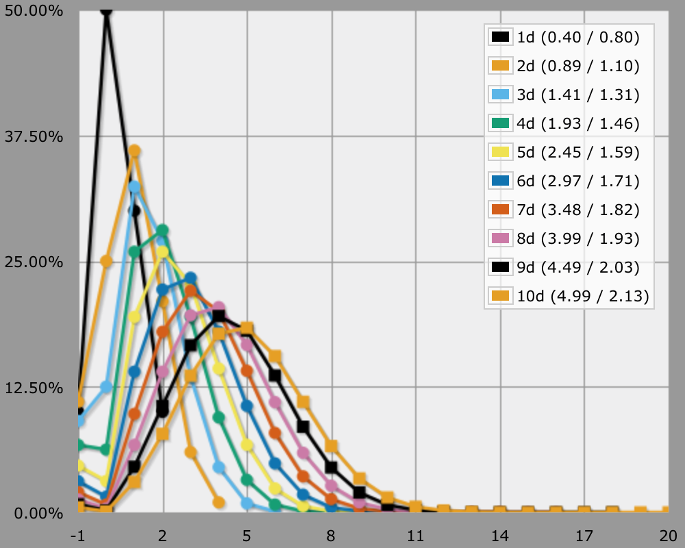
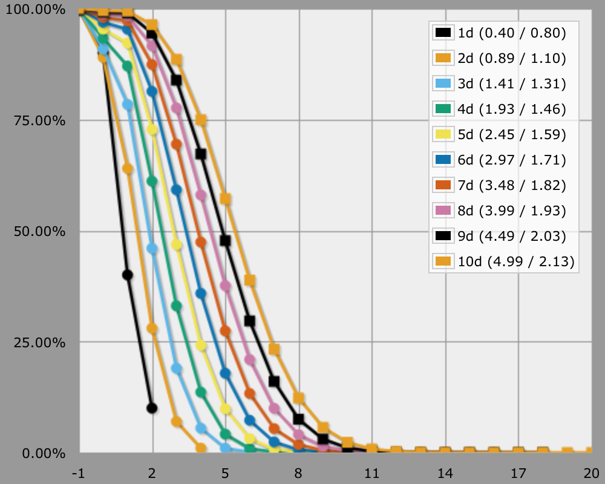
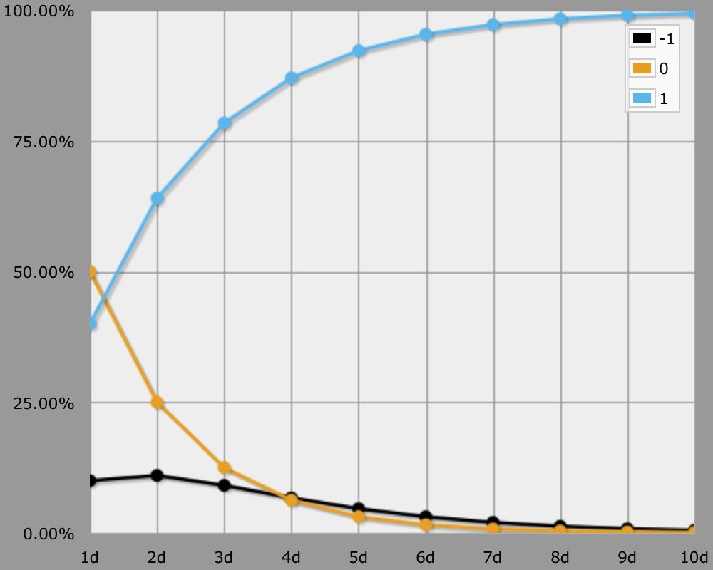

Exalted 2
From Botch to Success
Let's have a short look at the dice mechanics of Exalted, 2nd edition.
It's a dice pool mechanic, you roll some d10 and each die that rolled at least the target number counts as a success. The default target number is 7, so you have a 40% success rate per die. You typically need to roll between one and five successes to get something done. As a bonus, each 10 rolled counts as two successes. Rolling no successes at all means you fail, but there's an additional snag. If you rolled any 1s while failing, the result is a botch, which is supposed to be extra bad.
So, here's an AnyDice program that calculates the odds for pools with up to ten dice. A result of -1 indicates a botch, a result of 0 is a failure, the rest indicating degree of success.
function: evaluate ROLL:s {
SUCCESSES: ROLL >= 7
if SUCCESSES > 0 { result: SUCCESSES + (ROLL = 10) }
if [count 1 in ROLL] { result: -1 }
result: 0
}
loop DICE over {1..10} {
output [evaluate DICE d10] named "[DICE]d"
}
It's not the fastest way to compute it, but it can be done in just under five seconds. If AnyDice times out, the server is busy. Just try again, maybe with with less pools at once.


Using a slight tweak and the transposed view, we can see how the odds of botch, failure, and success change with the pool size.
loop DICE over {1..10} {
output [lowest of [evaluate DICE d10] and 1] named "[DICE]d"
}

As you can see, when using a pool size of four dice or larger, you're slightly more likely to botch than to fail. Your chances of getting at least one success are pretty good at that point though.